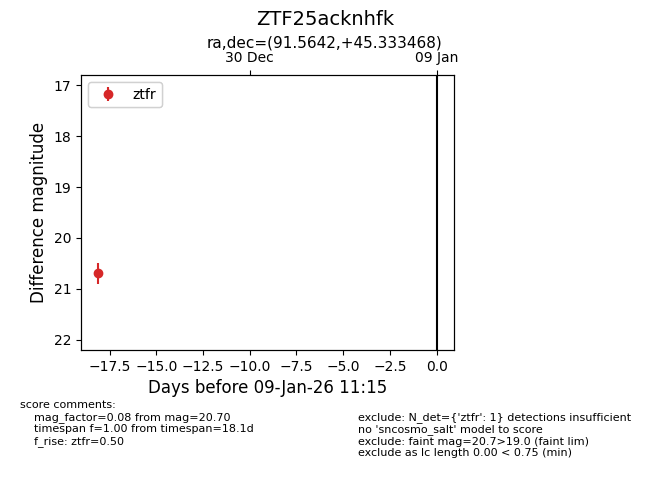
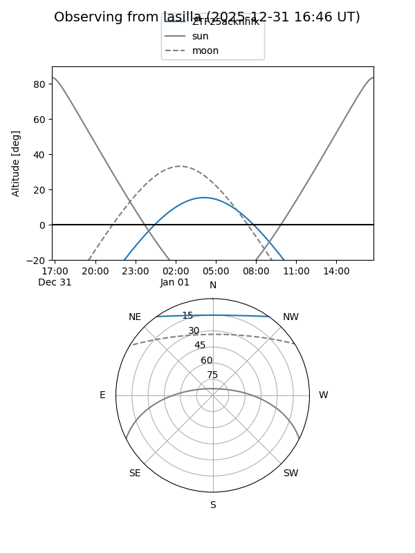
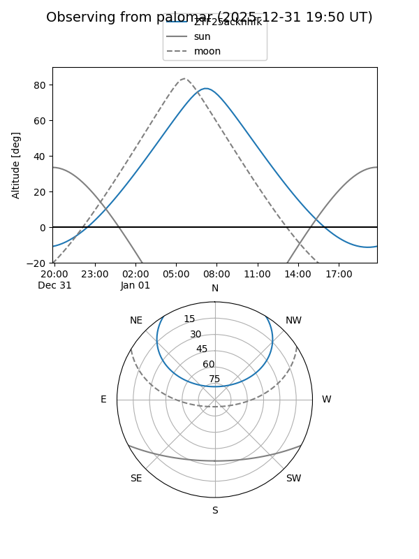

ZTF25acknhfk
Target ZTF25acknhfk at 2025-12-22 17:36
Aliases and brokers:
FINK: fink-portal.org/ZTF25acknhfk
Lasair: lasair-ztf.lsst.ac.uk/objects/ZTF25acknhfk
ALeRCE: alerce.online/object/ZTF25acknhfk
alt names
ZTF25acknhfk (ztf,fink_ztf)
Coordinates:
equatorial (ra, dec) = 91.5642,+45.33347
equatorial (HMS+DMS) = 06:06:15.40,+45:20:00.48
galactic (l, b) = (167.6676,+11.63979)
Flags:
Photometry:
last ztfr=20.70
1 ztfr detections
Lightcurve

Visibility


Additional plots